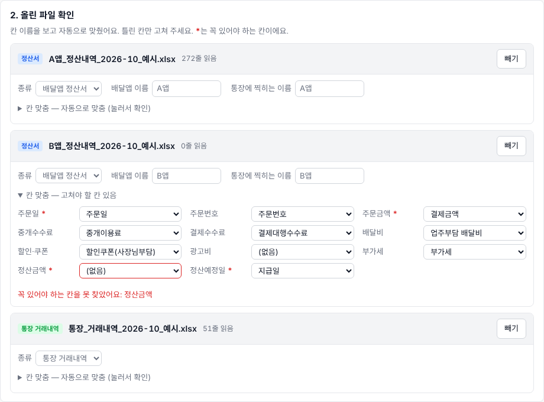
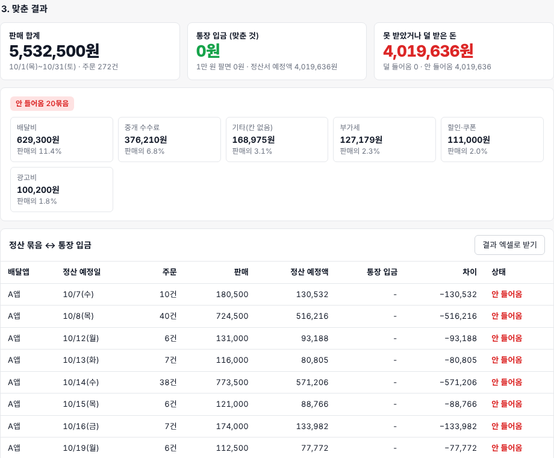
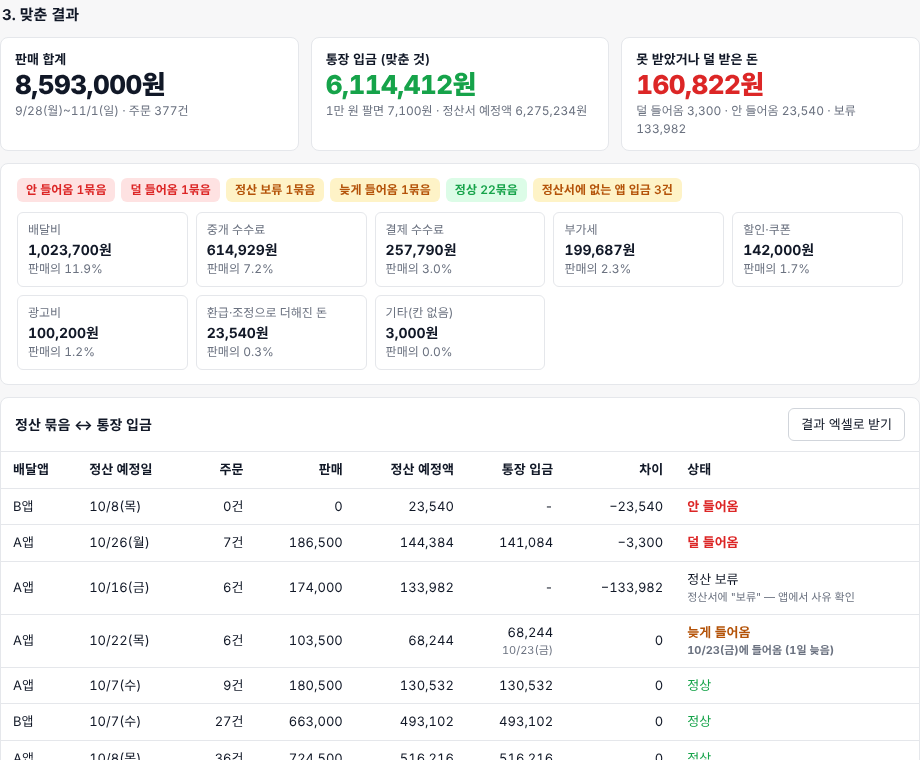

2026년 11월 5일 · 지어낸 데이터로 한 실험
현실처럼 만든 정산서·통장 파일 3개를 "내 파일로 맞추기"에 넣어 봤습니다
배달앱 정산서 2개와 통장 거래내역 1개를 가상 분식집의 10월 한 달치로 만들고, 일부러 문제 6개를 심었습니다. 처음 돌렸을 때는 하나도 못 찾았고, 그 원인 3가지를 고친 뒤 다시 돌려 6개를 모두 찾았습니다.
1차 실행0 / 6칸 이름·통장 칸 문제로 전부 "안 들어옴"
고친 것4가지칸 별칭 2개, 통장 줄 전체 검색, 정산 보류 표시
2차 실행6 / 6심은 문제 모두 찾음, 정상 22묶음
1단계 · 조사
공개 안내로 정산서 칸과 정산 주기를 정했습니다
확인된 것
- 배달앱 공식 안내에 정산금에서 빠지는 항목이 나와 있습니다: 중개이용료, 배달비, 결제정산수수료, 부가세, 고객할인비용, 클릭 광고비. 정산은 매일, 입금은 영업일 기준 3일 뒤이고 주말·공휴일에는 입금이 없습니다.
- 정산 상태는 입금완료·입금예정·정산요청·정산보류·이월·정산제외로 나뉘고, 입금액은 매출금액에서 차감금액을 빼고 조정금액을 더한 값입니다.
- 다른 앱은 중개이용료를 먼저 높은 요율로 떼고, 월말에 구간이 정해지면 차액을 다음 달 5영업일 안에 돌려주는 방식입니다.
못 찾아서 가정한 것
- 엑셀의 실제 칸 순서와 이름 (공개된 자료가 없음)
- 통장에 배달앱 입금이 찍히는 이름 (여기서는 "A앱정산", "B앱지급"으로 둠)
- B앱 지급 요일 (여기서는 월~일 주문을 다음 주 수요일에 지급한다고 둠)
참고: 배달앱 사장님 사이트의 정산 방식·정산내역 조회 안내, 배달앱 수수료 정리 글, 정산 지연 보도. 수수료율과 배달비는 예시일 뿐 실제 요율이 아닙니다.
2단계 · 예시 파일
가상 분식집 10월 한 달치, 파일 3개
| 파일 | 내용 | 줄 수 |
|---|---|---|
| A앱 정산내역 | 매일 정산, 3영업일 뒤 입금. 주문 한 건이 한 줄이고, 날마다 클릭 광고비 줄이 따로 있음 | 주문 241 · 광고 31 |
| B앱 정산내역 | 주 단위 지급. 9/28~11/1 주문과 "9월분 중개이용료 환급" 한 줄 | 주문 136 · 환급 1 |
| 통장 거래내역 | 10/1~11/5. 배달앱 입금 외에 카드사 매출대금, 본사 물품대금, 임대료, 전기요금 등이 섞여 있음 | 57 |
A앱 정산서 칸
주문일시주문번호주문유형매출금액중개이용료결제정산수수료배달비고객할인비용광고비부가세조정금액정산금액입금예정일정산상태비고B앱 정산서 칸
주문일주문번호결제금액중개이용료결제대행수수료업주부담 배달비할인쿠폰(사장님부담)부가세지급금액지급일비고통장 거래내역 칸
거래일시적요기재내용출금액입금액잔액거래점A앱은 차감 금액을 음수(−)로, B앱은 양수로 적어 앱마다 부호가 다른 상황도 넣었습니다. 10/5(개천절 대체공휴일)·10/9(한글날)은 입금일 계산에서 뺐습니다.
3단계 · 정답지
일부러 심은 문제 6개
| # | 심은 문제 | 도구가 보여야 할 것 |
|---|---|---|
| 1 | A앱 10/13 주문분이 정산보류 (입금 예정일 10/16, 133,982원) | 정산 보류 |
| 2 | A앱 10/26 입금이 정산서보다 3,300원 적음, 사유는 어디에도 없음 | 덜 들어옴 |
| 3 | A앱 10/22 입금이 하루 늦은 10/23에 들어옴 | 늦게 들어옴 |
| 4 | B앱 9월분 중개이용료 환급 23,540원이 통장에 없음 | 안 들어옴 |
| 5 | A앱 10/17 주문 1건에 조정금액 −3,000원(고객 보상), 정산서에는 적혀 있음 | 기타 3,000원 (돈은 맞음) |
| 6 | 9월 말 주문분 A앱 입금 3건이 10월 초 통장에 들어옴 | 정산서에 없는 입금 (시점 차이, 정상) |
4단계 · 1차 실행
처음에는 하나도 못 찾았습니다
세 파일을 그대로 올렸더니 결과가 "안 들어옴 20묶음", 통장 입금 0원으로 나왔습니다. 원인은 셋이었습니다.
- B앱 정산서를 통째로 못 읽음. 정산금액 칸 이름이 "지급금액"이었는데 알고 있는 이름 목록에 없어서, 꼭 있어야 하는 칸이 비었습니다.
- A앱 결제 수수료가 "기타"로 빠짐. "결제정산수수료"라는 이름을 몰라서 168,975원이 정체 모를 기타로 잡혔습니다.
- 통장 입금을 하나도 못 알아봄. 통장의 "적요" 칸에는 "타행입금"만 있고 앱 이름은 "기재내용" 칸에 있었는데, 도구가 적요 칸만 봤습니다. 실제 은행 파일도 이런 경우가 흔할 것으로 보입니다.
- 추가로, 정산서의 "정산상태" 칸을 읽지 않아 보류된 돈과 사라진 돈을 구분하지 못하는 구조였습니다.


5단계 · 고친 것
도구를 4군데 고쳤습니다
1결제 수수료 칸의 다른 이름에 결제정산수수료, 결제정산이용료를 더함
2정산금액 칸의 다른 이름에 지급금액을 더함
3통장은 적요 칸만이 아니라 그 줄의 글자 전체(적요·기재내용 등)에서 앱 이름을 찾도록 바꿈
4정산서에 정산상태 칸이 있으면 읽고, "보류"인 묶음은 "안 들어옴" 대신 "정산 보류"로 따로 보여 줌. 환급처럼 정산금액이 주문금액보다 큰 줄은 "환급·조정으로 더해진 돈"으로 따로 셈
6단계 · 2차 실행
심은 문제 6개를 모두 찾았습니다
| # | 도구가 보여 준 것 | 금액 | 결과 |
|---|---|---|---|
| 1 | 정산 보류 A앱 10/16 묶음, "앱에서 사유 확인" | 133,982 | 맞음 |
| 2 | 덜 들어옴 A앱 10/26 묶음, 예정 144,384 → 입금 141,084 | −3,300 | 맞음 |
| 3 | 늦게 들어옴 A앱 10/22 묶음, 10/23에 들어옴 (1일 늦음) | 68,244 | 맞음 |
| 4 | 안 들어옴 B앱 10/8 묶음 (환급 한 줄) | −23,540 | 맞음 |
| 5 | 빠진 돈 항목에 "기타(칸 없음) 3,000원" | 3,000 | 맞음 |
| 6 | 정산서에 없는 앱 입금 10/1·10/2·10/6 A앱 입금 3건 | 491,465 | 맞음 |
전체 숫자
- 판매 합계 8,593,000원 (주문 377건, 9/28~11/1)
- 정산서 예정액 6,275,234원 중 통장과 맞춘 입금 6,114,412원, 1만 원 팔면 7,100원이 통장에 들어옴
- 못 받았거나 덜 받은 돈 160,822원 = 덜 들어옴 3,300 + 안 들어옴 23,540 + 보류 133,982
- 빠진 돈이 큰 순서: 배달비 1,023,700원(판매의 11.9%), 중개 수수료 614,929원(7.2%), 결제 수수료 257,790원(3.0%), 부가세 199,687원(2.3%)
- 카드사 매출대금 등 배달앱이 아닌 입금 24건은 대조에서 자동으로 빠짐
정답지의 숫자는 예시 파일을 만든 코드(samples/make_samples.py)에서 따로 계산해 맞춰 봤습니다.

7단계 · 남은 과제
실제 파일로 확인해야 할 것
- 통장에 찍히는 이름. 실제로는 앱 이름이 아니라 운영 회사 이름으로 찍힐 수 있습니다. 그때는 화면의 "통장에 찍히는 이름" 칸에 그 이름을 적어야 맞춰집니다.
- 실제 엑셀 칸 이름과 순서. 사장님 한 분의 정산 화면만 봐도 별칭 목록을 바로 고칠 수 있습니다.
- 덜 들어온 3,300원의 사유. 도구는 차이를 찾을 뿐 사유는 모릅니다. 앱 고객센터에 물어볼 목록으로 정리해 주는 것이 다음 기능입니다.
- 월 경계. 9월 말 주문이 10월 초에 들어오는 것처럼 달이 바뀌는 입금은 두 달치 파일을 함께 넣어야 깔끔하게 맞습니다.
모든 데이터는 지어낸 예시입니다. 수수료율·배달비·지급 요일은 설명을 위한 값이고 실제 배달앱 요율이나 일정이 아닙니다.
직접 해 보기
"내 파일로 맞추기" 화면의 10월 한 달 현실형 예시 → 바로 해 보기를 누르면 이 기록과 같은 결과가 나옵니다. 파일을 받아 직접 올려 봐도 됩니다. 파일은 브라우저 안에서만 읽고 어디로도 보내지 않습니다.